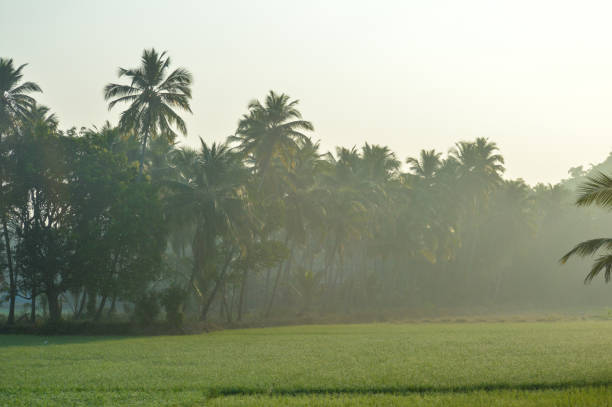

Forest Forward II: Using AI to map carbon in forests using High Carbon Stock Approach and assess fire vulnerability of forests to Combat Climate Change and Protect Livelihoods in India

Mapping carbon content in forests: This application leverages advanced geospatial technologies, such as remote sensing and AI, to support forest conservation efforts in India. The application will allow stakeholders to better monitor forest health, estimate biomass, and contribute to climate mitigation efforts.
Fire Vulnerability Mapping: This application would help develop a fire vulnerability map which could help to identify areas that are prone to fires based on several forest degradation indicators.
Data characteristics
The datasets used for this projects are all publicly available or accessible via common platforms such as Planet.com
More details to follow.
Model characteristics
This model is trained to predict above-ground biomass (AGB) in tropical and subtropical forests using multi-source satellite imagery at the pixel level. Specifically:
Prediction Unit: Estimates biomass at individual pixel level (typically 10-40m resolution depending on input data)
Output: Biomass density in Mg/ha (megagrams per hectare)
Input Data: Processes multi-sensor data including Sentinel-1, Sentinel-2, Landsat-8, PALSAR, and DEM
Application Scope: Best suited for tropical and subtropical forest ecosystems in South/Southeast Asia
Biomass Range: Validated for forests with biomass between ~40-460 Mg/ha
How to use
The pipeline is designed to handle multi-source satellite imagery and corresponding biomass data with pixel-level precision. Key aspects include:
End-to-End Workflow: From raw data ingestion to model training, evaluation, and deployment
Advanced Feature Engineering: Comprehensive spectral indices, texture features, spatial gradients, and PCA components
Stable Neural Architecture: Utilizes a custom StableResNet with residual connections and layer normalization for robust biomass regression
Multi-Site Data Processing: Capable of processing and integrating data from multiple geographically distinct study sites
Flexible Deployment: Includes HuggingFace deployment capabilities with Gradio interface
Memory Efficient Processing: Chunk-based processing for handling large satellite images
Use cases
About
Powered by / Provided by: Vertify Earth
Catalyzed by: FAIR Forward - AI for All (https://www.bmz-digital.global/en/overview-of-initiatives/fair-forward/), GIZ
Financed by: BMZ (https://www.bmz-digital.global/en/digital-transformation-and-development-cooperation/)
Authors: Jonas Nothnagel, Philipp Olbrich
Contact: Michael Anthony <michael@vertify.earth>